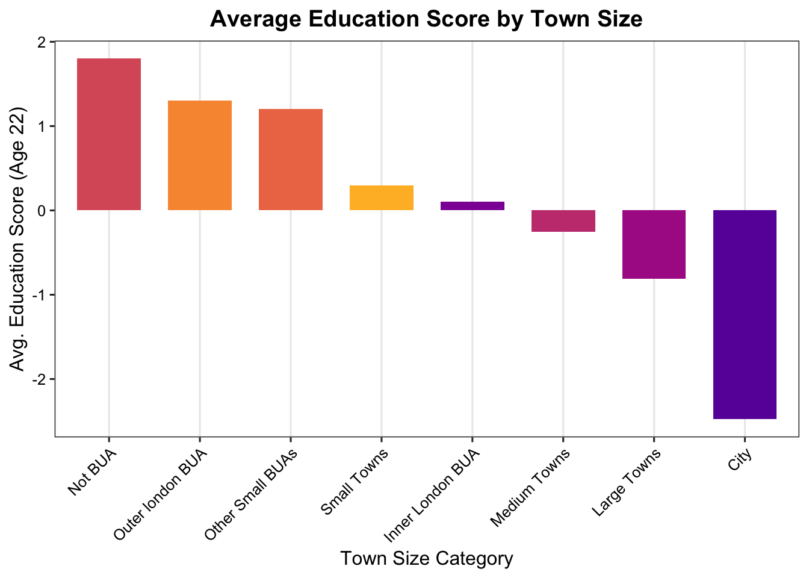
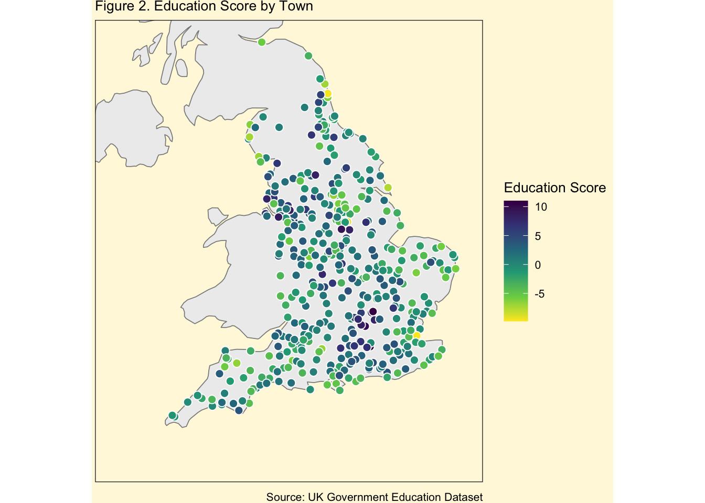

| Variable | Description |
|---|---|
| TOWN11NM | Town name (2011 boundaries) |
| SIZE_FLAG | Town size category (City, Large, Medium, Small) |
| POPULATION_2011 | Population according to the 2011 UK Census |
| Highest level qualification achieved by age 22: average score | Average qualification score achieved by age 22 |
| Education Score | Standardized education score for comparison |
| Activity at age 19: full-time higher education | Percentage in full-time higher education at age 19 |
Impact of Towns on Young Adults’ Education in England
Executive Summary
This report examines how the characteristics of English towns—such as size, location, and population—relate to education outcomes at ages 19 and 22. Using government data, it maps and compares average education scores and higher education participation across regions. The findings show stronger outcomes in towns near major universities, particularly in the South East, while coastal and northern towns lag behind. These patterns point to persistent regional disparities that may benefit from targeted policy and investment.
Introduction
This dataset looks at how different town characteristics affect the education outcomes of young people in England. It covers towns of all sizes, from small rural areas to large urban areas, and also notes whether a town is located near the coast. The main focus is on what young people are doing at age 19 and 22, such as what qualifications they’ve earned and whether they’re in full-time education or work. Key indicators include the average education score by age 22, qualification levels, and types of activity at age 19, such as employment or apprenticeships. By comparing these outcomes across towns, we can explore whether larger towns or certain regions are linked to better educational results. The dataset also highlights differences between types of towns, like rural versus coastal, to better understand regional inequalities. It tracks how many young people are in apprenticeships, working, or not involved in education or training. These details make it possible to explore which factors, like town size, location, or economy that best predicts strong education outcomes. The findings could help inform regional policy and guide where support and resources are most needed. Ultimately, this data offers valuable insight into how where someone grows up can shape their education journey.
Methodology
This study investigates how town size and characteristics relate to educational outcomes among young people in England. It addresses two research questions:
1. How does town size influence average education scores or qualifications achieved by age 22?
2. Which town characteristics are most predictive of full-time higher education participation at age 19?
The analysis was conducted in RStudio. Data cleaning and transformation were performed using the tidyverse suite, and visualizations were created using ggplot2. The dataset originates from UK government sources and includes demographic, geographic, and education indicators such as population size, education scores, and post-school activity.
After filtering rows with missing or placeholder values, relevant variables were standardized and numeric transformations were applied where necessary. Towns were categorized using the SIZE_FLAG variable, which includes categories such as City, Large Towns, Medium Towns, Small Towns, and various Built-Up Area (BUA) types like Inner London BUA and Not BUA.
Correlation analysis and linear regression were used to explore the relationship between town size and average education scores. Logistic regression and feature importance methods were applied to identify predictors of full-time higher education participation at age 19.
Table 1 presents key variables used in the analysis. Figure 1 shows the average education score at age 22 by town size category, revealing that cities and large towns had lower average scores compared to smaller or non-BUA areas—challenging common assumptions about urban educational advantage.

Results
Figure 2 shows the spatial distribution of education scores across English towns. Higher scores tend to cluster in the East and South East regions, particularly around Cambridge, Oxford, and the commuter belt near London. In contrast, towns in the North and some coastal regions report lower average education scores by age 22. This geographic trend reflects broader regional disparities in post-secondary educational outcomes.
We also explored which characteristics might predict full-time education participation at age 19. While factors such as university presence, income levels, and town size appeared relevant, further analysis was limited by non-numeric data types and inconsistent indicator formats. As such, we focused on mapping overall education performance, which more reliably captured spatial patterns in town-level outcomes.
These results suggest that both regional context and access to educational infrastructure play a role in shaping long-term academic achievement. The map highlights specific areas where targeted investment or policy support may improve educational trajectories.

Discussion
The spatial analysis of education scores reveals notable regional patterns across English towns. Higher scores are concentrated in the South East, particularly near academic hubs such as Cambridge and Oxford. These areas often benefit from stronger educational infrastructure, greater economic resources, and proximity to universities, which collectively support better post-secondary outcomes.
In contrast, towns in the North and along the coast display consistently lower education scores. This disparity may reflect differences in access to higher education, economic opportunities, or local investment in youth development. Although the original aim included identifying predictors of full-time higher education participation at age 19, limitations in data format and variable types restricted deeper statistical modelling. Nonetheless, the geographic distribution of education outcomes remains clear and informative.
Interestingly, while it was expected that larger towns and cities would outperform smaller ones, the analysis found that some smaller or non-BUA areas had higher average education scores, while cities and large towns tended to lag. This challenges assumptions about urban advantage and suggests that education quality may not always scale with town size. These findings raise further questions about local education systems, cost of living, and community-level support structures.
Conclusion
The analysis highlights a strong connection between town characteristics and educational attainment. Towns in economically advantaged or university-adjacent regions are more likely to report higher average education scores, while others—particularly in the North or on the coast—tend to fall behind. Additionally, the lower scores seen in cities and large towns indicate that educational outcomes are not solely a function of urban access, but may also be influenced by local pressures or resource disparities.
Despite some limitations, the results point toward meaningful spatial trends that should inform future policy. Ensuring that young people, regardless of where they live, have equal access to quality education remains a critical goal.
Recommendations
- Prioritise Investment in Underserved Regions: Towns with consistently lower education scores—particularly in the North, coastal areas, and certain urban centers—should receive targeted funding and policy attention.
- Improve Data Consistency: Future datasets should aim for clearer documentation and standardized variable formats to enable more robust modelling and comparative analysis.
- Expand Local Education Support: Increasing access to higher education in smaller towns and underperforming urban areas through outreach, transport support, and scholarship programs could help address current gaps.
- Conduct Further Research: Future studies could explore interactions between economic indicators, infrastructure quality, and education outcomes to build a more holistic understanding of regional disparities.
References
This report used educational data sourced from the UK Office for National Statistics (Office for National Statistics 2023), and town coordinates were obtained using the tidygeocoder package (Sadler 2023).
The following R packages were used throughout the analysis:
tidyverse(Wickham 2023)dplyr(Wickham et al. 2023)janitor(Firke 2023)here(Bryan, Hester, and Marwick 2023)kableExtra(Dong 2023)tidygeocoder(Sadler 2023)viridis(Garnier 2023)R(R Core Team 2024)
References
Bryan, Jenny, Jim Hester, and Ben Marwick. 2023. Here: A Simpler Way to Find Your Files. https://CRAN.R-project.org/package=here.
Dong, Zhuoer. 2023. kableExtra: Construct Complex Table with ’Kable’ and Pipe Syntax. https://CRAN.R-project.org/package=kableExtra.
Firke, Sam. 2023. Janitor: Simple Tools for Examining and Cleaning Dirty Data. https://CRAN.R-project.org/package=janitor.
Garnier, Simon. 2023. Viridis: Colorblind-Friendly Color Maps for r. https://CRAN.R-project.org/package=viridis.
Office for National Statistics. 2023. “Educational Attainment of Young People in English Towns.” https://www.ons.gov.uk/peoplepopulationandcommunity/educationandchildcare/articles/whydochildrenandyoungpeopleinsmallertownsdobetteracademicallythanthoseinlargertowns/2023-07-25.
R Core Team. 2024. R: A Language and Environment for Statistical Computing. Vienna, Austria: R Foundation for Statistical Computing. https://www.R-project.org/.
Sadler, Jesse. 2023. “Tidygeocoder: Geocoding Made Easy.” https://cran.r-project.org/package=tidygeocoder.
Wickham, Hadley. 2023. The Tidyverse: Easily Install and Load the ’Tidyverse’. https://CRAN.R-project.org/package=tidyverse.
Wickham, Hadley, Romain Francois, Lionel Henry, and Kirill Müller. 2023. Dplyr: A Grammar of Data Manipulation. https://CRAN.R-project.org/package=dplyr.